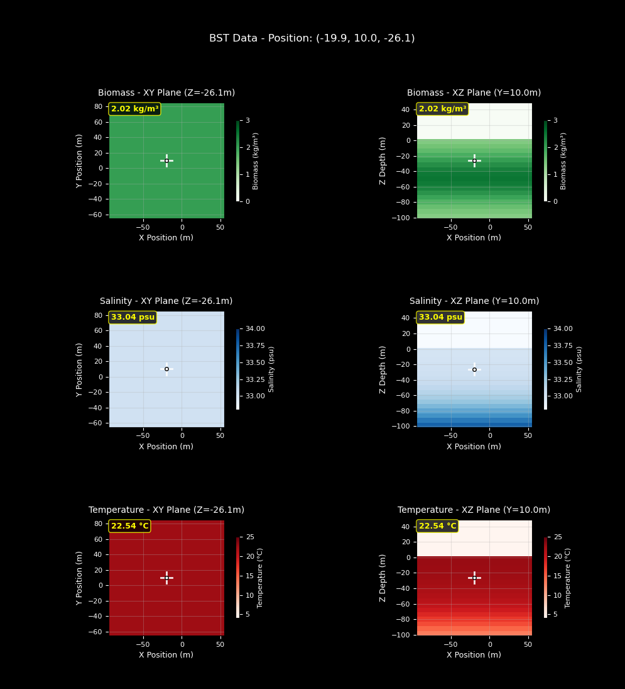
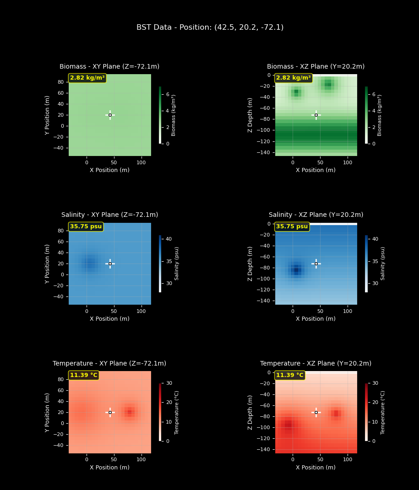
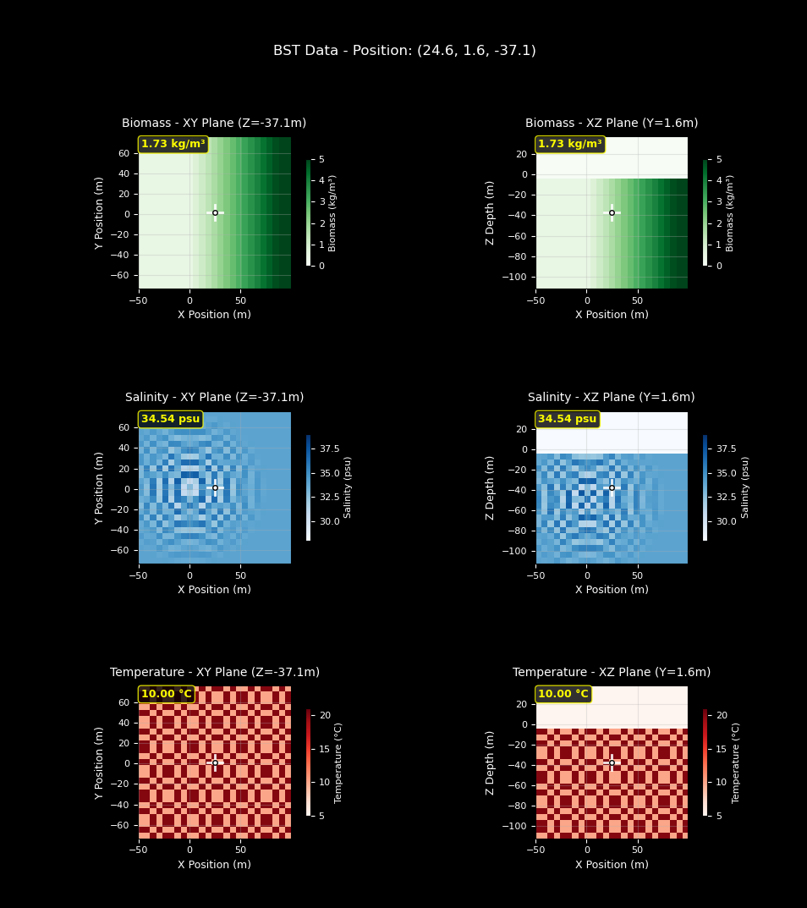

生物量、盐度和温度 (BST) 传感器
基于真实数据，模拟全球生物量、盐度和温度的分布和采样。
有关如何使用此传感器的示例，请参阅生物量、盐度和温度采样。
有关 Python API，请参阅 BSTSensor。
要将自定义函数传递给用于计算生物量、盐度或温度的 BST 传感器，请在脚本开头调用以下命令。有关自定义 BST 传感器的更多信息，请参阅下面的示例配置、上面链接的示例脚本以及 API 文档：set_temperature_function(new_function)，其中“new_function”是指向您的自定义函数的指针，该函数仅接受参数“location”（一个包含 3 个元素的数组）。
图表绘制
您可以通过调用以下命令实时绘制 BST 数据图表：visualizer = env.initialize_bst_graphs()，不同的图表参数请参见 API 文档和示例 visualizer.update(location)，其中 location 是从位置传感器获取的实时位置。
注意
自从实现了生物量、盐度和温度采样以来，我们也实现了动态潮汐。默认的生物量、盐度和温度函数没有考虑动态潮汐和动态水位，因此，如果您希望将这些动态模型纳入计算，您可以设置使用动态潮汐数据的自定义生物量、盐度和温度函数。
注意
我们注意到，实时更新的热图可能会导致延迟，并对模拟运行时间产生显著影响。生物量、盐度、温度采样示例页面演示了如何使用 Python 多进程在实时更新热图的同时显著提升模拟性能。如果您希望使用 BST 传感器的绘图功能，我们强烈建议您使用多进程。
以下示例展示了生物量、盐度和温度分布的默认配置以及两种不同的配置方法。默认配置示例展示了在不更改任何其他参数的情况下，分布的默认状态。第二个示例演示了如何仅通过更改环境场景配置来实现自定义。最后一个示例演示了如何设计自定义函数并将其设置为生物量、盐度和温度的新分布模型。

默认配置：
scenario = {
"name": "test_currents",
"world": "PierHarbor",
"package_name": "Ocean",
"main_agent": "auv0",
"ticks_per_sec": 60,
"frames_per_sec": 60,
"agents": [
{
"agent_name": "auv0",
"agent_type": "HoveringAUV",
"sensors": [
{
"sensor_type": "BSTSensor",
"socket": "COM",
"configuration":{}
},
{
"sensor_type": "LocationSensor",
"socket": "COM"
}
],
"control_scheme": 0,
"location": [-20, 10, -10]
}
],
}
定制配置

自定义配置参数：
{
"sensor_type": "BSTSensor",
"socket": "COM",
"Hz": 1,
"configuration": {
"max_biomass": 6,
"biomass_range": (0, 7),
"peak_depth": 110.0,
"biomass_clusters": [
{
"position": [65, 20, -15],
"strength": 5,
"falloff": 15
},
{
"position": [5, 20, -30],
"strength": 5,
"falloff": 10
}
],
"surface_psu": 40,
"deep_psu": 30,
"halocline_depth": 90,
"halocline_thickness": 75,
"salinity_range": (28, 41),
"salinity_clusters": [
{
"position": [5, 20, -85],
"strength": 8,
"falloff": 10
}
],
"surface_temp": 2,
"deep_temp": 26,
"thermocline_depth": 110,
"thermocline_thickness": 50,
"temperature_range": (0, 30),
"temperature_clusters": [
{
"position": [80, 20, -75],
"strength": 12,
"falloff": 12
},
{
"position": [-10, 20, -95],
"strength": 12,
"falloff": 25
}
]
}
}
自定义函数
由于实现自定义函数不仅仅是修改配置参数，我们仅包含了传递给 HoloOceanEnvironment.initialize_bst_graphs 函数调用的自定义函数。如果您想查看自定义函数的完整实现，请参阅生物量、盐度、温度采样示例。

自定义函数和配置参数：
def biomass_fx(location):
# NOTE: It's required that we name this parameter "location"
x, y, z = location
x_fade = max(0, min(1, x / 100)) # fades from 0 at x=0.5 to 5.5 at x=100, then stays at 5.5
return 5.0 * x_fade + 0.5
def salinity_fx(location):
# This function creates decaying oscillations that originate from a single point
import math
x, y, z = location
center = [0, 0, -50]
# The zip() function in Python pairs corresponding values in two iterables together in tuples
dist = math.sqrt(sum((a - b)**2 for a, b in zip(location, center)))
if dist > 80:
return 34 # base salinity
amplitude = 4 * (1 - dist/80)
return 34 + amplitude * math.cos(dist * 2 * math.pi / 10)
def temperature_fx(location):
# This function creates a checkerboard-type pattern across the world
x, y, z = location
square_size = 5
checks = sum(int(coord // square_size) % 2 for coord in [x, y, z])
return 10 if checks % 2 == 0 else 20 # alternate between two temps
scenario = {
"name": "BST Custom Functions",
"main_agent": "auv0",
"ticks_per_sec": 60,
"frames_per_sec": 60,
"agents": [
{
"agent_name": "auv0",
"agent_type": "HoveringAUV",
"sensors": [
{
"sensor_type": "BSTSensor",
"socket": "COM",
"configuration": {
"biomass_range": (0, 5),
"salinity_range": (28, 39),
"temperature_range": (5, 21)
}
},
{
"sensor_type": "LocationSensor",
"socket": "COM"
}
],
"control_scheme": 0,
"location": [-20, 10, -10]
}
],
}